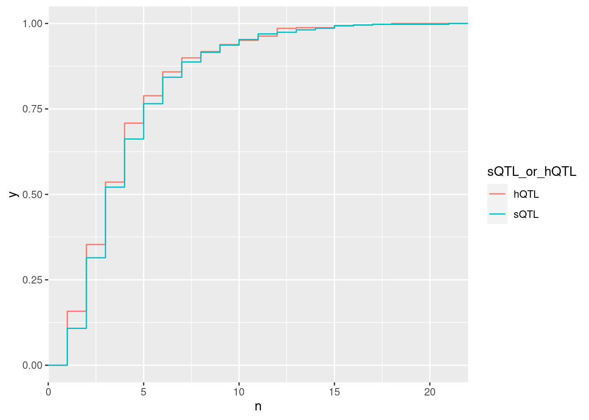
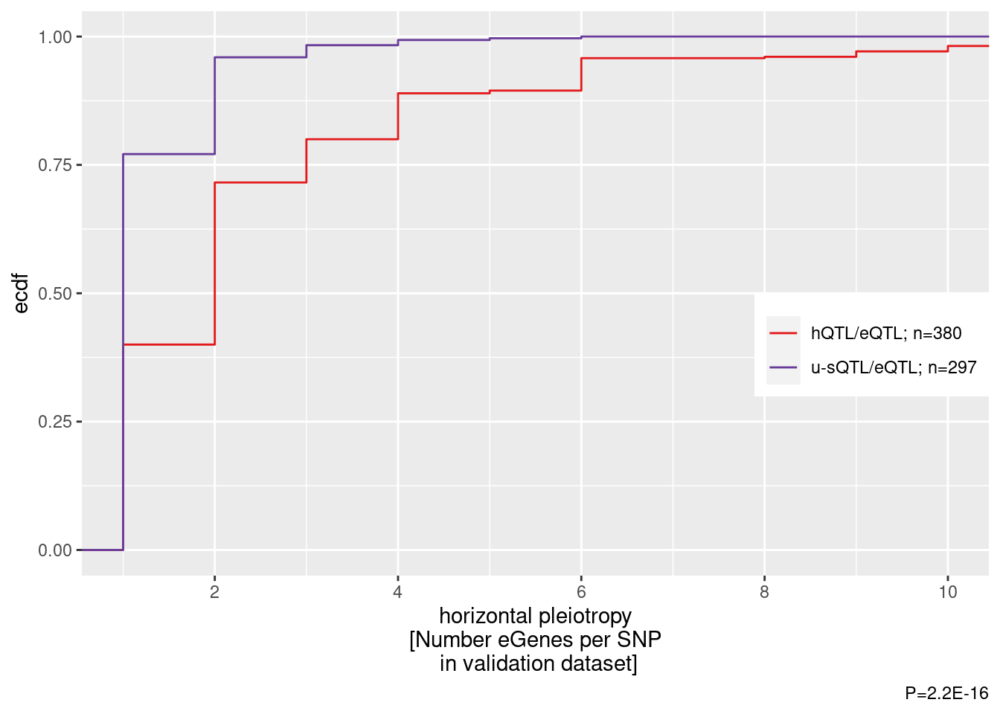
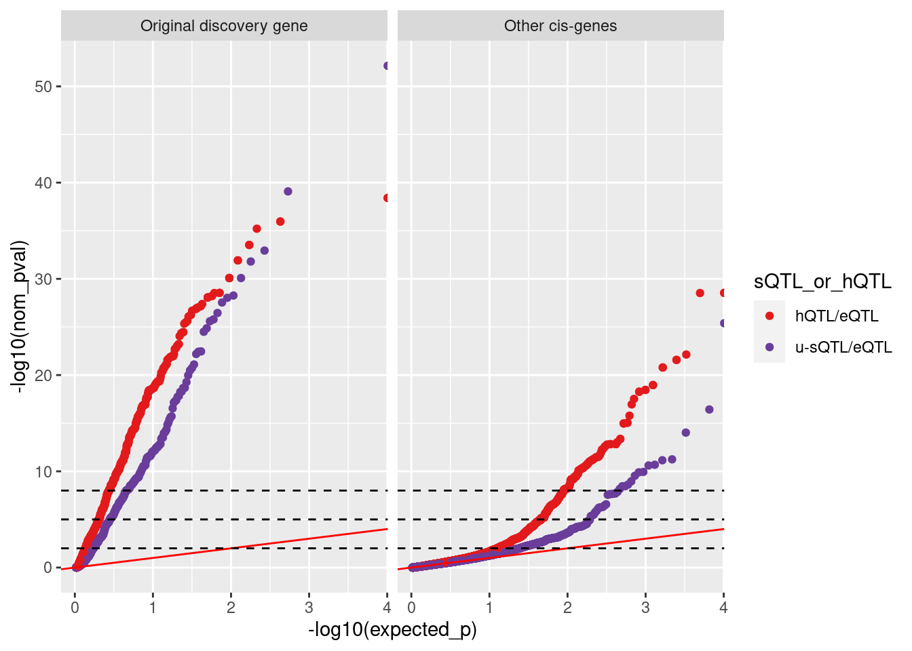
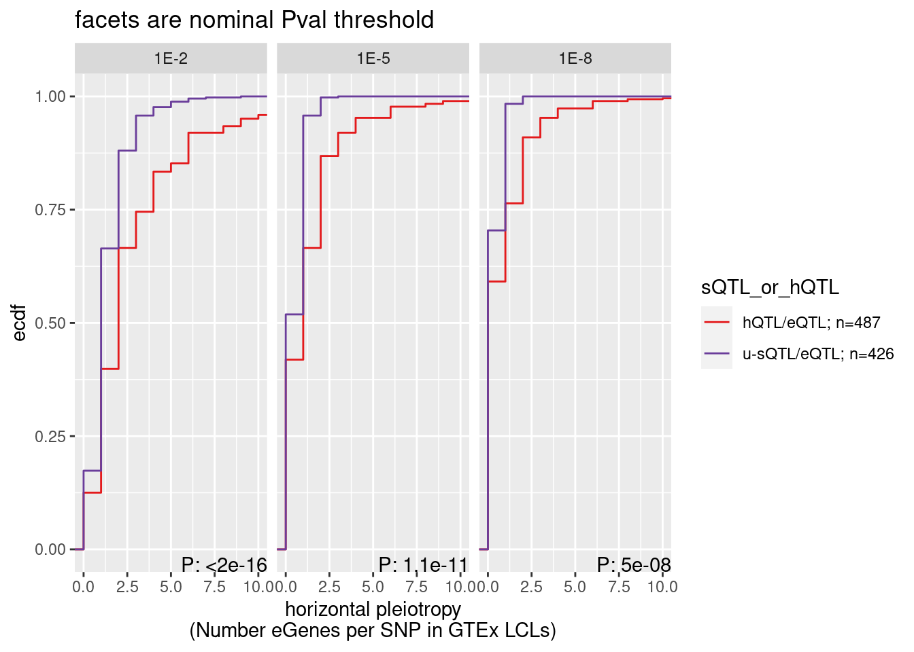

Last updated: 2024-04-29
Checks: 6 1
Knit directory:
ChromatinSplicingQTLs/analysis/
This reproducible R Markdown analysis was created with workflowr (version 1.7.0). The Checks tab describes the reproducibility checks that were applied when the results were created. The Past versions tab lists the development history.
The R Markdown is untracked by Git. To know which version of the R
Markdown file created these results, you’ll want to first commit it to
the Git repo. If you’re still working on the analysis, you can ignore
this warning. When you’re finished, you can run
wflow_publish to commit the R Markdown file and build the
HTML.
Great job! The global environment was empty. Objects defined in the global environment can affect the analysis in your R Markdown file in unknown ways. For reproduciblity it’s best to always run the code in an empty environment.
The command set.seed(20191126) was run prior to running
the code in the R Markdown file. Setting a seed ensures that any results
that rely on randomness, e.g. subsampling or permutations, are
reproducible.
Great job! Recording the operating system, R version, and package versions is critical for reproducibility.
Nice! There were no cached chunks for this analysis, so you can be confident that you successfully produced the results during this run.
Great job! Using relative paths to the files within your workflowr project makes it easier to run your code on other machines.
Great! You are using Git for version control. Tracking code development and connecting the code version to the results is critical for reproducibility.
The results in this page were generated with repository version 209c2d5. See the Past versions tab to see a history of the changes made to the R Markdown and HTML files.
Note that you need to be careful to ensure that all relevant files for
the analysis have been committed to Git prior to generating the results
(you can use wflow_publish or
wflow_git_commit). workflowr only checks the R Markdown
file, but you know if there are other scripts or data files that it
depends on. Below is the status of the Git repository when the results
were generated:
Ignored files:
Ignored: .DS_Store
Ignored: .Rhistory
Ignored: .Rproj.user/
Ignored: analysis/.Rhistory
Ignored: analysis/figure/
Ignored: code/.DS_Store
Ignored: code/.RData
Ignored: code/._report.html
Ignored: code/.ipynb_checkpoints/
Ignored: code/.snakemake/
Ignored: code/APA_Processing/
Ignored: code/Alignments/
Ignored: code/ChromHMM/
Ignored: code/ENCODE/
Ignored: code/ExpressionAnalysis/
Ignored: code/ExtractPhenotypeBedByGenotype.py
Ignored: code/FastqFastp/
Ignored: code/FastqFastpSE/
Ignored: code/FastqSE/
Ignored: code/FineMapping/
Ignored: code/GTEx/
Ignored: code/Gencode.v34.6Colors.bed.gz
Ignored: code/Genotypes/
Ignored: code/H3K36me3_CutAndTag.pdf
Ignored: code/IntronSlopes/
Ignored: code/LR.bed
Ignored: code/LR.seq.bed
Ignored: code/LongReads/
Ignored: code/MYB.tracks.ini
Ignored: code/Metaplots/
Ignored: code/Misc/
Ignored: code/MiscCountTables/
Ignored: code/Multiqc/
Ignored: code/Multiqc_chRNA/
Ignored: code/NonCodingRNA/
Ignored: code/NonCodingRNA_annotation/
Ignored: code/PairwisePi1Traits.P.all.txt.gz
Ignored: code/PeakCalling/
Ignored: code/Phenotypes/
Ignored: code/PlotGruberQTLs/
Ignored: code/PlotQTLs/
Ignored: code/ProCapAnalysis/
Ignored: code/QC/
Ignored: code/QTL_SNP_Enrichment/
Ignored: code/QTLs/
Ignored: code/RPKM_tables/
Ignored: code/ReadLengthMapExperiment/
Ignored: code/ReadLengthMapExperimentResults/
Ignored: code/ReadLengthMapExperimentSpliceCounts/
Ignored: code/ReferenceGenome/
Ignored: code/Rplots.pdf
Ignored: code/Session.vim
Ignored: code/SmallMolecule/
Ignored: code/SplicingAnalysis/
Ignored: code/TODO
Ignored: code/Tehranchi/
Ignored: code/alias/
Ignored: code/bigwigs/
Ignored: code/bigwigs_FromNonWASPFilteredReads/
Ignored: code/config/.DS_Store
Ignored: code/config/._.DS_Store
Ignored: code/config/.ipynb_checkpoints/
Ignored: code/config/config.local.yaml
Ignored: code/dag.pdf
Ignored: code/dag.png
Ignored: code/dag.svg
Ignored: code/data/
Ignored: code/debug.ipynb
Ignored: code/debug_python.ipynb
Ignored: code/deepTools/
Ignored: code/featureCounts/
Ignored: code/featureCountsBasicGtf/
Ignored: code/genome_config.yaml
Ignored: code/gwas_summary_stats/
Ignored: code/hyprcoloc/
Ignored: code/igv_session.xml
Ignored: code/isoseqbams/
Ignored: code/log
Ignored: code/logs/
Ignored: code/notebooks/.ipynb_checkpoints/
Ignored: code/pi1/
Ignored: code/polyA.Splicing.Subset_YRI.NominalPassForColoc.bed.bgz
Ignored: code/rules/.ipynb_checkpoints/
Ignored: code/rules/OldRules/
Ignored: code/rules/notebooks/
Ignored: code/salmontest/
Ignored: code/scratch/
Ignored: code/scripts/.ipynb_checkpoints/
Ignored: code/scripts/GTFtools_0.8.0/
Ignored: code/scripts/__pycache__/
Ignored: code/scripts/liftOverBedpe/liftOverBedpe.py
Ignored: code/snakemake.dryrun.log
Ignored: code/snakemake.log
Ignored: code/snakemake.sbatch.log
Ignored: code/snakemake_profiles/slurm/__pycache__/
Ignored: code/test.introns.bed
Ignored: code/test.introns2.bed
Ignored: code/test.log
Ignored: code/tracks.xml
Ignored: data/.DS_Store
Ignored: data/GWAS_catalog_summary_stats_sources/._list_gwas_summary_statistics_6_Apr_2022-10.csv
Ignored: data/GWAS_catalog_summary_stats_sources/._list_gwas_summary_statistics_6_Apr_2022-11.csv
Ignored: data/GWAS_catalog_summary_stats_sources/._list_gwas_summary_statistics_6_Apr_2022-2.csv
Ignored: data/GWAS_catalog_summary_stats_sources/._list_gwas_summary_statistics_6_Apr_2022-3.csv
Ignored: data/GWAS_catalog_summary_stats_sources/._list_gwas_summary_statistics_6_Apr_2022-4.csv
Ignored: data/GWAS_catalog_summary_stats_sources/._list_gwas_summary_statistics_6_Apr_2022-5.csv
Ignored: data/GWAS_catalog_summary_stats_sources/._list_gwas_summary_statistics_6_Apr_2022-6.csv
Ignored: data/GWAS_catalog_summary_stats_sources/._list_gwas_summary_statistics_6_Apr_2022-7.csv
Ignored: data/GWAS_catalog_summary_stats_sources/._list_gwas_summary_statistics_6_Apr_2022-8.csv
Ignored: data/GWAS_catalog_summary_stats_sources/._list_gwas_summary_statistics_6_Apr_2022.csv
Ignored: data/Metaplots/.DS_Store
Ignored: output/~$20240223_NumQTLs_edited.xlsx
Untracked files:
Untracked: analysis/2024-04-26_eQTL_subtypePlieotropy.Rmd
Untracked: code/scripts/Tidy_GTEx_SummaryStats_AllCisWindowGenes.py
Unstaged changes:
Modified: analysis/2024-04-18_RelativeNMDEfficiency.Rmd
Modified: code/rules/GTEx.smk
Modified: code/scripts/GenometracksByGenotype
Modified: code/scripts/Tidy_GTEx_SummaryStats.py
Note that any generated files, e.g. HTML, png, CSS, etc., are not included in this status report because it is ok for generated content to have uncommitted changes.
There are no past versions. Publish this analysis with
wflow_publish() to start tracking its development.
I predict that u-sQTL/eQTLs will be eQTLs less genes than hQTL/eQTLs…
About that horizontal pleiotropy of transcription based eQTLs vs splicing based eQTLs… Here I used the same red/purple groups of eQTL SNPs that I used for the manuscript where we looked at effect sizes across GTEx tissues. In this plot I looked for associations in GTEx LCL data, and counted the number of protein coding genes (100kb window from the SNP, among the 14000 genes we considered for many of our other analyses throughout the paper) with a nominally significant association (P<0.01) with the SNP.
library(tidyverse)
GTEx.dat <- read_tsv("../code/scratch/Tidy.SummaryStats.eQTLsQTLhQTL_AllGenes.tsv.gz")
GTEx.dat %>% distinct(sQTL_or_hQTL, BensClassification)# A tibble: 3 × 2
sQTL_or_hQTL BensClassification
<chr> <chr>
1 sQTL sQTL
2 hQTL hQTL_Distal
3 hQTL hQTL_Proximal GTEx.dat %>%
group_by(TopSNP, sQTL_or_hQTL, gene) %>%
summarise(IsSigInAnyTissue = any(eQTL_nomP < 0.01)) %>%
ungroup() %>%
count(TopSNP, sQTL_or_hQTL) %>%
ggplot(aes(x=n, color=sQTL_or_hQTL)) +
stat_ecdf()
GTEx.dat %>%
distinct(tissue)# A tibble: 54 × 1
tissue
<chr>
1 ovary
2 brain_cerebellar_hemisphere
3 nerve_tibial
4 breast_mammary_tissue
5 testis
6 colon_transverse
7 fallopian_tube
8 brain_caudate_basal_ganglia
9 lung
10 esophagus_muscularis
# … with 44 more rowsGTEx.dat %>%
filter(tissue == "cells_ebv-transformed_lymphocytes") %>%
# mutate(sQTL_or_hQTL = BensClassification) %>%
count(nom_pval < 0.01, TopSNP, sQTL_or_hQTL) %>%
filter(`nom_pval < 0.01`) %>%
add_count(sQTL_or_hQTL) %>%
mutate(sQTL_or_hQTL = recode(sQTL_or_hQTL, "sQTL"="u-sQTL/eQTL", "hQTL"="hQTL/eQTL")) %>%
mutate(sQTL_or_hQTL = str_glue("{sQTL_or_hQTL}; n={nn}")) %>%
ggplot(aes(x=n, color=sQTL_or_hQTL)) +
stat_ecdf() +
scale_color_manual(values=c("#e31a1c", "#6a3d9a"), name=NULL) +
coord_cartesian(xlim=c(1,10)) +
scale_x_continuous(breaks=seq(0, 10, 2)) +
labs(y="ecdf", x="horizontal pleiotropy\n[Number eGenes per SNP\n in validation dataset]", caption="P=2.2E-16") +
theme(
legend.position = c(1, .5),
legend.justification = c("right", "top"),
legend.box.just = "right",
legend.margin = margin(6, 6, 6, 6)
)
ggsave("../code/scratch/sQTL_hQTL_Pleiotropy.pdf", width=3.5, height=3.5)
GTEx.dat %>%
filter(tissue == "cells_ebv-transformed_lymphocytes") %>%
count(nom_pval < 0.01, TopSNP, sQTL_or_hQTL) %>%
filter(`nom_pval < 0.01`) %>%
wilcox.test(n~sQTL_or_hQTL, data=.)
Wilcoxon rank sum test with continuity correction
data: n by sQTL_or_hQTL
W = 79914, p-value < 2.2e-16
alternative hypothesis: true location shift is not equal to 0What’s up with the 25% or so of sQTLs apparently with more than one eQTL?
Genes <- read_tsv("../code/GTEx/QTLs/cells_ebv-transformed_lymphocytes/qqnorm.sorted.bed.gz") %>%
dplyr::select(1:6)
GTEx.dat %>%
filter(tissue == "cells_ebv-transformed_lymphocytes") %>%
filter(sQTL_or_hQTL == "sQTL") %>%
filter(nom_pval < 0.01) %>%
add_count(TopSNP) %>%
inner_join(Genes, by=c("gene"="gid")) %>%
mutate(IsPleitropic = n > 1) %>%
dplyr::select(`#Chr`:pid, nom_pval, strand, IsPleitropic) %>%
group_by(IsPleitropic) %>%
group_walk(~ write_tsv(.x, paste0("../code/scratch/sQTLs_IsPleitropic_", .y$IsPleitropic, ".bed"), col_names = F))Let’s repeat some of the above analysis but after I recalled QTLtools use use 500kb cis windows…
dat.500kbwindow <- Sys.glob("../code/GTEx/BenSubsetSNPs_QTLs/*/NominalPass.qqnorm.txt.tabix.gz") %>%
setNames(str_replace(., "../code/GTEx/BenSubsetSNPs_QTLs/(.+?)/NominalPass.qqnorm.txt.tabix.gz", "\\1")) %>%
lapply(read_tsv) %>%
bind_rows(.id="tissue") %>%
inner_join(GTEx.dat %>%
dplyr::select(-c(1:5)) %>%
distinct() %>%
separate(TopSNP, into=c("SNP_chrom", "var_from", "SNP_ref", "SNP_alt"), sep=":", remove=F, convert=T) %>%
mutate(var_chr = paste0("chr", SNP_chrom)),
by=c("var_chr", "var_from"))
dat.500kbwindow %>%
distinct(TopSNP)# A tibble: 913 × 1
TopSNP
<chr>
1 1:1661169:C:A
2 1:2556224:C:A
3 1:6205308:A:G
4 1:9943262:G:A
5 1:10211630:C:G
6 1:11635653:T:G
7 1:13769535:C:A
8 1:15586903:A:T
9 1:16206527:C:T
10 1:19801518:G:T
# … with 903 more rowsGTEx.dat %>%
distinct(TopSNP)# A tibble: 913 × 1
TopSNP
<chr>
1 2:75660970:G:A
2 7:30500783:G:T
3 19:41586462:A:T
4 12:6321571:G:A
5 12:4607406:C:A
6 12:6184753:G:A
7 1:41105645:A:T
8 4:6609511:TG:T
9 19:54962842:G:A
10 6:155314147:G:GTTC
# … with 903 more rowsdat.500kbwindow %>%
filter(tissue == "cells_ebv-transformed_lymphocytes") %>%
mutate(sQTL_or_hQTL = recode(sQTL_or_hQTL, "sQTL"="u-sQTL/eQTL", "hQTL"="hQTL/eQTL")) %>%
mutate(IsDiscovery.eGene = if_else(`#phe_id` == eGene, "Original discovery gene", "Other cis-genes")) %>%
group_by(sQTL_or_hQTL, IsDiscovery.eGene) %>%
mutate(expected_p = percent_rank(nom_pval)) %>%
ggplot(aes(x=-log10(expected_p), y=-log10(nom_pval), color=sQTL_or_hQTL)) +
geom_point() +
geom_abline(slope=1, color='red') +
scale_color_manual(values=c("#e31a1c", "#6a3d9a")) +
facet_wrap(~IsDiscovery.eGene) +
geom_hline(yintercept =c(2, 5, 8), linetype='dashed')
dat.500kbwindow %>%
filter(tissue == "cells_ebv-transformed_lymphocytes") %>%
mutate(`1E-2`=nom_pval<0.01,
`1E-5`=nom_pval<1E-5,
`1E-8`=nom_pval<1E-8,
) %>%
dplyr::select(sQTL_or_hQTL, TopSNP, `1E-2`:`1E-8`) %>%
pivot_longer(names_to = "Threshold", values_to = "PassThreshold", `1E-2`:`1E-8`) %>%
group_by(sQTL_or_hQTL, TopSNP, Threshold) %>%
summarise(Num_eGenes = sum(PassThreshold)) %>%
ungroup() %>%
add_count(sQTL_or_hQTL, Threshold) %>%
mutate(sQTL_or_hQTL = recode(sQTL_or_hQTL, "sQTL"="u-sQTL/eQTL", "hQTL"="hQTL/eQTL")) %>%
mutate(sQTL_or_hQTL = str_glue("{sQTL_or_hQTL}; n={n}")) %>%
ggplot() +
stat_ecdf(aes(x=Num_eGenes, color=sQTL_or_hQTL)) +
scale_color_manual(values=c("#e31a1c", "#6a3d9a")) +
coord_cartesian(xlim=c(0,10)) +
facet_wrap(~Threshold) +
geom_text( data = . %>%
group_by(Threshold) %>%
summarize(results = format.pval(wilcox.test(Num_eGenes ~ sQTL_or_hQTL)$p.value, 2)),
aes(label=str_glue("P: {results}"), x=Inf, y=-Inf, vjust=0, hjust=1)) +
labs(y="ecdf", x="horizontal pleiotropy\n(Number eGenes per SNP in GTEx LCLs)", title="facets are nominal Pval threshold")
dat.500kbwindow %>%
filter(tissue == "cells_ebv-transformed_lymphocytes") %>%
mutate(`1E-2`=nom_pval<0.01,
`1E-5`=nom_pval<1E-5,
`1E-8`=nom_pval<1E-8,
) %>%
dplyr::select(sQTL_or_hQTL, TopSNP, `1E-2`:`1E-8`) %>%
pivot_longer(names_to = "Threshold", values_to = "PassThreshold", `1E-2`:`1E-8`) %>%
group_by(sQTL_or_hQTL, TopSNP, Threshold) %>%
summarise(Num_eGenes = sum(PassThreshold)) %>%
ungroup() %>%
group_by(Threshold) %>%
summarize(results = wilcox.test(Num_eGenes ~ sQTL_or_hQTL)$p.value)# A tibble: 3 × 2
Threshold results
<chr> <dbl>
1 1E-2 3.22e-17
2 1E-5 1.08e-11
3 1E-8 4.96e- 8
sessionInfo()R version 4.2.0 (2022-04-22)
Platform: x86_64-pc-linux-gnu (64-bit)
Running under: CentOS Linux 7 (Core)
Matrix products: default
BLAS/LAPACK: /software/openblas-0.3.13-el7-x86_64/lib/libopenblas_haswellp-r0.3.13.so
locale:
[1] LC_CTYPE=en_US.UTF-8 LC_NUMERIC=C LC_TIME=C
[4] LC_COLLATE=C LC_MONETARY=C LC_MESSAGES=C
[7] LC_PAPER=C LC_NAME=C LC_ADDRESS=C
[10] LC_TELEPHONE=C LC_MEASUREMENT=C LC_IDENTIFICATION=C
attached base packages:
[1] stats graphics grDevices utils datasets methods base
other attached packages:
[1] forcats_0.5.1 stringr_1.4.0 dplyr_1.0.9 purrr_0.3.4
[5] readr_2.1.2 tidyr_1.2.0 tibble_3.1.7 ggplot2_3.3.6
[9] tidyverse_1.3.1
loaded via a namespace (and not attached):
[1] Rcpp_1.0.8.3 lubridate_1.8.0 assertthat_0.2.1 rprojroot_2.0.3
[5] digest_0.6.29 utf8_1.2.2 R6_2.5.1 cellranger_1.1.0
[9] backports_1.4.1 reprex_2.0.1 evaluate_0.15 highr_0.9
[13] httr_1.4.3 pillar_1.7.0 rlang_1.0.2 readxl_1.4.0
[17] rstudioapi_0.13 jquerylib_0.1.4 rmarkdown_2.14 textshaping_0.3.6
[21] labeling_0.4.2 bit_4.0.4 munsell_0.5.0 broom_0.8.0
[25] compiler_4.2.0 httpuv_1.6.5 modelr_0.1.8 xfun_0.30
[29] systemfonts_1.0.4 pkgconfig_2.0.3 htmltools_0.5.2 tidyselect_1.1.2
[33] workflowr_1.7.0 fansi_1.0.3 crayon_1.5.1 tzdb_0.3.0
[37] dbplyr_2.1.1 withr_2.5.0 later_1.3.0 grid_4.2.0
[41] jsonlite_1.8.0 gtable_0.3.0 lifecycle_1.0.1 DBI_1.1.2
[45] git2r_0.30.1 magrittr_2.0.3 scales_1.2.0 cli_3.3.0
[49] stringi_1.7.6 vroom_1.5.7 farver_2.1.0 fs_1.5.2
[53] promises_1.2.0.1 xml2_1.3.3 bslib_0.3.1 ragg_1.2.5
[57] ellipsis_0.3.2 generics_0.1.2 vctrs_0.4.1 tools_4.2.0
[61] bit64_4.0.5 glue_1.6.2 hms_1.1.1 parallel_4.2.0
[65] fastmap_1.1.0 yaml_2.3.5 colorspace_2.0-3 rvest_1.0.2
[69] knitr_1.39 haven_2.5.0 sass_0.4.1